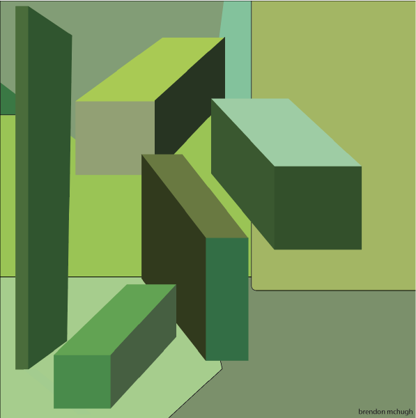

Shapes
Shapes is a vector image of rectangular items and it is a green palet. I made this because it was an assignment to make a vector drawing with some sort of theme. After that we painted this design on a board. I chose an all green theme since at the time it was starting to be spring and I wanted to do something that could remind me of time of year.

Room Layout
Room Layout was a project where we had to make a system that would help us organize 100 different items easilly. This image is layput of my closet. I organized all the clothing by the actual location they are in my closet. Everything is also sorted by what season I would wear the article of clothing.

Flag Day 5k
Flag Day 5k was a project/competition where we had to make designs that would be put on t-shirts for all the runners. The design had certain criteria with what has to be on the design were, Flag Day 5k, benefits the FEF, and Falmouth. I chose to design the three runners the way I did because I wanted them to represent 1st, 2nd, 3rd place. The American flag is there because the theme of the design and race was America themed.

Beginner Level Logo
Beginner Level Logo was a project where I had to make a poster for the freshen in High school to see when they do there first year in the class. This was a project the teacher gave only a few people and she had us all do different levels of the class. There were only four levels so four kids from each level of Graphic Design were given a class level and then the class that had designs made for them would vote on the best one. In this work I decided to keep it simple and type big bold "FHS Graphic Design" that was because the schools Name was Falmouth High School(FHS). I wanted to have the photoshop icon in the corner because in graphic design level one that is the only program you used. I also had the maroon circle in the back because that was the schools color

Class Banner
Class Banner was for the whole Grpahic Design classroom. Since we only had one classroom I decided to make the four programs that we end up using throughout the four levels of the class.I made each one of the programs using the square tool and then normal letters. I also made the Apple desktop computer since that was also the only kind of computer we ended up using in the class.

Night Life
Night Life is a vector image of a city at night time. In this image I added a few different things, I added buildings, a helicopter, a car, some lights and some smaller items. In the sky I have a helicopter made using the pen tool. The reason for making this piece was because I had just seen a helicopter go over my neighborhood one night and I had gone to the city earlier that same day. I ended up basing the image in a city suburb at night with a helicopter going around looking for something with its light.
Run Jack Run
Run Jack Run was a class project but also a competition for a t-shirt design. When wokring on this project there were a few requirements that included having "8th Annual Run Jack Run" and the year. This project was for a race which is why I included all the figures running and a finishline.

Armour
Armour was a project where we had to create our own brand new company. Armour was the company I came up with and this was the logo design for the company. I decided to go for a different aproach than just normally typing out the words, instead I decided it would be best if I sort of outlined the letters but only enough to be able to tell what the letter is supposed to be. This company was ment to a vegan healthy choice to eating a protein bar before or after a workout btuthe catch was you were eating natural ingredients.